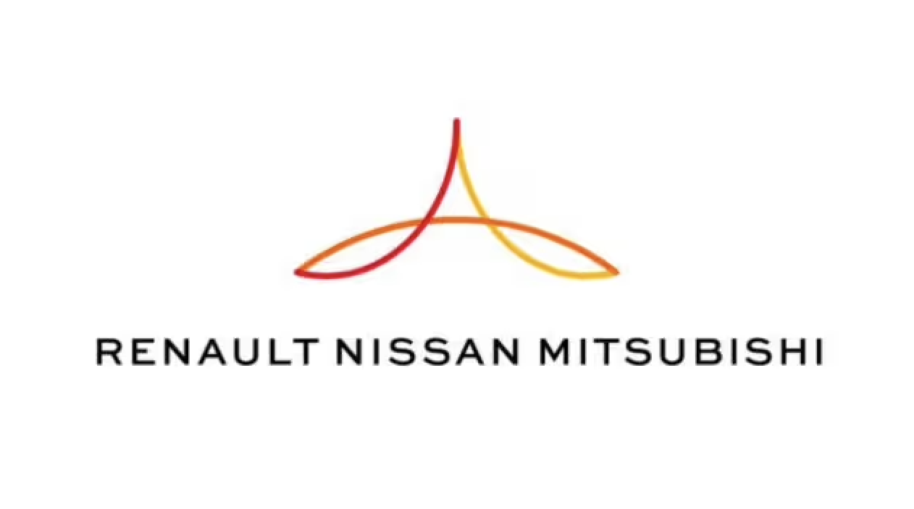
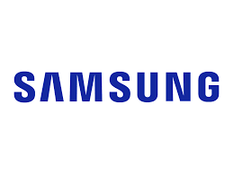

Experience

Research Intern
Australian National University, Canberra
Upcoming June 2025
- Researching LLM-based semantic search for astronomy literature using AstroLLaMA.
- Fine-tuning pre-trained models to improve contextual accuracy and relevance.
- Developing a tailored framework to enhance information retrieval for researchers.

Software Engineering Intern
Renault Nissan
Nov 2024 - Jan 2025
- Optimized financial data workflows using Python and SQL, boosting efficiency to 99.9%.
- Developed automated ETL pipelines, reducing data processing time by 60%.
- Designed dashboards for real-time analytics, improving decision-making speed.

ML Research Intern
Samsung PRISM
Mar 2024 - Jul 2024
- Developed GANs and cGANs using Dreambooth’s method, improving image resolution by 512px.
- Integrated a text-to-image pipeline with LLaMA and Stable Diffusion for better prompt generation.
- Fine-tuned Stable Diffusion with LoRA, optimizing img-to-img pipelines with efficient GPU usage.